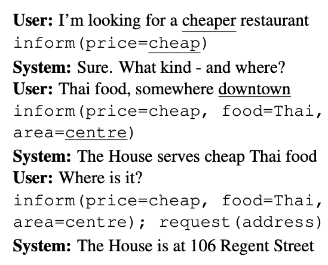

12.3 Dialog Systems
Frame-based, retrieval, and generative dialogue.
These notes walk through the lecture slides. The original deck is unchanged; use (slides) on the course hub if you want that PDF.
1. Understanding this turn in light of the last ones
The NLU block from note 12.2 has two jobs: intent (what act is this?) and slots (what values came with it?). Those labels are what you train on.

A restaurant-booking dialog is the usual classroom example. Each user line gets an intent (inform, request, affirm) and slot values (food=italian, price=cheaper). You want a model that predicts those labels on new lines, using the history when the current line is short ("yes", "the cheaper one").
2. Dialog act / intent classification
A dialog act is the role of the utterance in the conversation: a yes/no question, an inform, a request, a goodbye. In product language this is the intent.
This is text classification with extra constraints:
- classes are specific to your bot (
order_pizzais not in a public intent set) - the label can depend on the previous state ("7" is a time only after you asked for a time)
- you need enough labeled turns per intent
Building this from scratch is expensive. Do it when Cloud NLU or an existing framework cannot express your acts and slots. Full control pays off when the ontology will grow and you will keep labeling.
If your intents are a few dozen FAQs, a classifier plus a small set of examples per class is enough. If they are open-ended, you are no longer in goal-oriented NLU.
3. Slot filling
Once you know the intent, fill the slots. In "I'm looking for a cheaper restaurant," price=cheaper (take the value as written unless you have a canonical mapping).
This is close to NER: find the span, assign a type. The difference is the type inventory is the slots of this intent, not a general PERSON/ORG list.
| Utterance | Intent | Slots |
|---|---|---|
| I'm looking for a cheaper restaurant | find_restaurant | price=cheaper |
| Italian, around 7 | inform | food=italian, time=7 |
| Yes, book it | affirm | — |
Two dedicated models (intent + slots) are accurate and slow. They also both want labels. Joint models exist. In a first system, two models plus a timeout budget is fine.
Span extractors fail when the value is implied ("the same place as Friday") or when the user corrects a slot ("not large, medium"). The dialog manager has to accept updates, not only first fills.
4. Response generation
After intent and slots, the system must speak. Three designs:
Fixed responses. FAQ bots. Look up the best reply from a pool. The simplest table is one reply per intent and ignore slots. A better ranker scores the pool against the full dialog state.
Templates. Fill holes: "There are {n} {food} restaurants in that price range. Do you want a table at {time}?" This is the right tool for clarifying questions.
Automatic generation. A conditional model maps dialog state to the next agent sentence. Graphical models or neural language models. More natural, less controllable. Use when fluency matters more than a guaranteed legal sentence.
| Method | Best for | Failure mode |
|---|---|---|
| Fixed lookup | FAQ | Sounds canned; misses slot-specific answers |
| Templates | Goal-oriented follow-ups | Limited phrasing |
| Learned NLG | Chitchat, open prompts | Off-policy, hard to test |
5. What to remember
Intent without slots is a topic label. Slots without a manager are a pile of facts. Generation without a state is a language model with a microphone.
Label a few real transcripts before you pick a vendor or a paper. The ontology (which intents, which slots) is the design. The model is how you fill it.
A practical order: write ten made-up but realistic dialogs, define the intents and slots those dialogs need, label them, then train. If you cannot write the dialogs, you do not yet know the product. Cloud NLU is fine for that first ontology; replace it when the labels no longer fit.
6. Practice
-
Label intent and slots for "Make it 8 instead, still Italian."
-
Why can "yes" be a complete, useful turn in a dialog and a useless document for a bag-of-words classifier?
-
You have 40 FAQ answers and no labeled slots. Which response method do you ship first, and what data would you collect next?
Fixed lookup is a complete first bot. Slots come when the answers start to branch.